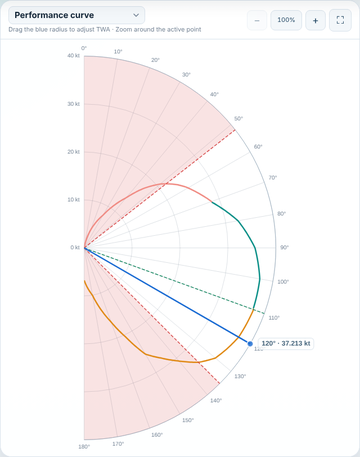
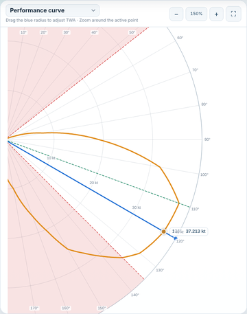
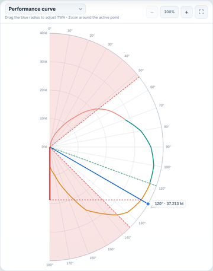

Polars Chart
Chart
A Polars Chart is generally represented in a semi-circle Scale (180°). This is because modern boats have symmetrical performances, thus behaving similarly whether the wind comes from port side (left) or from starboard (right).
The Scale

A polar scale is built upon 2 dimensions:
The angle must be read from the top (0°) to the bottom (180°), and represents the TWA.
The distance to the center represents the Boat Speed.
The blue radius indicates the selected TWA. Its marker stays on the outer semicircle so it remains easy to grab, while its label displays the corresponding boat speed.
The Boat Speed axis might rescale if the plotted curve becomes too narrow or too large as the TWS varies.
Chart views
The selector in the chart header, set to Performance curve by default, switches the chart between six views of the same polar. The chosen view is remembered in this browser.
- Performance curve: the polar chart on a half disc, with its zoom.
- Speed by TWA: boat speed against TWA on straight axes, colored by the best sail. Small differences and local peaks are easier to read. A dashed line shows where another sail overlaps the best one, within 1.4 % of its speed; the tooltip and the active point label list these sails with their gap.
- VMG by TWA: VMG against TWA, with the upwind and downwind optimums marked.
- Best sail map (TWA × TWS): one cell per TWA and TWS, colored by the best sail and shaded by speed. When the foils overlay is checked, a yellow outline marks the cells where the foils are active (« Foils active » in the legend). Gray cells are where the polar gives no speed. Two red dashed lines mark the best VMG upwind and downwind angle for each TWS, and the angles beyond them are grayed out. Hover a cell to see its sail, its speed and the best VMG angles for that TWS. Click or drag on the map to set both the TWA and the TWS.
- Gap to the best sail: for each sail available with your options, its speed loss in % against the fastest sail. The sail changes stand out.
- Polars by TWS: the polar for the current TWS, in blue, over the polars at 10, 15, 20 and 25 kt.
In every view, the blue line marks the current TWA: drag it, or click the chart, to change the TWA. The zoom works in every view except the Best sail map: in Speed by TWA, VMG by TWA and Gap to the best sail, both axes narrow around the active point; in Polars by TWS, the chart is magnified around the active point like the Performance curve.
Zoom
The chart can zoom from 100% to 300% around the active point, using its TWA and Boat Speed as the focus.
- Use the [−] and [+] buttons in the chart header.
- Use the mouse wheel over the chart, or pinch with two fingers on a touch screen.
- Click the percentage button or double-click the chart to return to 100%.
The last button [⛶] shows the chart in full screen. Press [Esc] or click it again to come back.

The zoom works like a magnifying glass centered on the active point: the polar keeps its true shape, with 0 kt at its origin, and the active point stays in place on screen while the chart grows around it. The speed rings and their labels follow the zoom, and the speed labels are shown along the blue TWA radius, next to the active point. Angle labels are shown where each radius leaves the visible area. Only the active sail curve is shown, with a colored point marking the actual polar position, and its value label. The foil markers stay on the outer arc of the half disc. Polar calculations remain unchanged.
The example beside shows the chart zoomed at 150%.
The Curve

The curve is a summary of the best speed at every angle.
Each color represents the sail producing the best speed for a given angle and for the TWS provided in the input field.
The best sail for a given angle is also displayed in the Sails panel where the bold line has the same color.
It is possible to draw one curve per sail by checking the Plot Full Sails Curves option on the Sails panel, at the left of the chart.
Best VMG

Please read this section first if you don't know what the VMG is.
The VMG can be visually represented on the chart thanks to the VMG Projection to Axis in the Attitude panel.
The VMG projection option will draw a red dotted horizontal line, showing the effective amount of speed pushing the boat in the wind direction.
At the two angles where VMG is best (upwind or downwind), a red dashed line represents the Best VMG.
Also, the portion of the Chart between 0° and Best upwind VMG on one side, and Best downwind VMG and 180°
on the other side, are fulfilled in pale red because they are almost never a good idea to sail
at those angles.
On the example beside, the VMG projection is enabled: the red dotted line from the current point reaches the vertical axis at the VMG value. The pale red zones are the underperforming angles, and the red dashed lines are the Best Upwind and Downwind VMG angles.